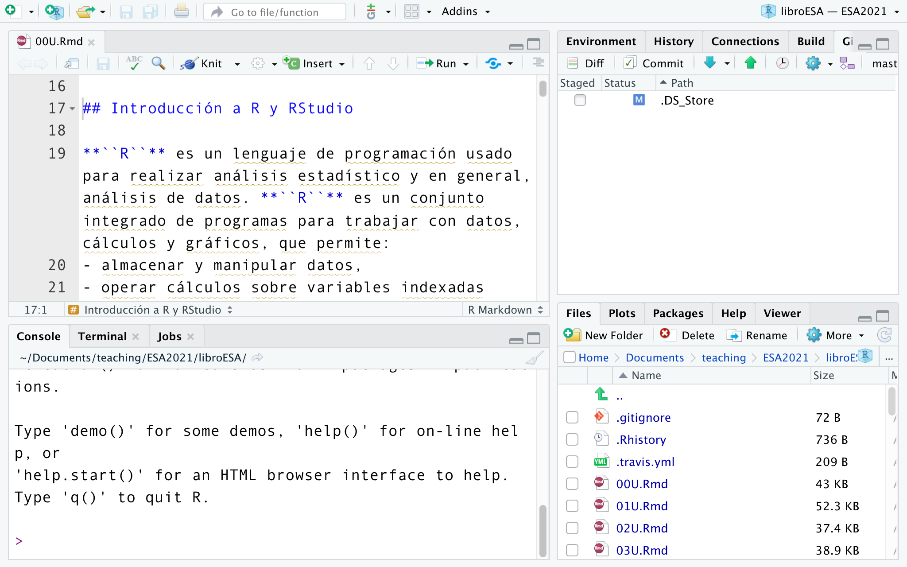

Capítulo 9 Introducción a R y RStudio
La mayor parte de los ejercicios expuestos a lo largo de este Manual utilizan una o más funciones de R para resolver un problema específico. Se destaca que no se describen las funciones en detalle, ya que ellas pueden ser consultadas en otras publicaciones. Sin embargo, en este anexo, se presenta una introducción básica a la programación en R con RStudio y una selección de recursos disponibles para profundizar en su práctica.
9.1 Introducción
R es un lenguaje de programación usado para realizar análisis estadístico y en general, análisis de datos. Se trata de un conjunto integrado de programas para trabajar con datos, cálculos y gráficos, que permite:
almacenar y manipular datos,
operar cálculos sobre variables indexadas (como las matrices),
analizar datos con una colección de herramientas,
aplicar herramientas gráficas para el análisis de datos y,
programar con un lenguaje sencillo y en constante desarrollo.
Gráfico 9.1: Logo de R
R es el lenguaje de programación popular debido a tres ventajas principales:
accesibilidad: cualquiera puede descargar el programa de manera gratuita,
código abierto: quien desee modificar el código de
R, puede hacerlo, ycomunidad de usuarios: existe una actividad permanente alrededor de
R, que brinda soporte a los usuarios para resolver dudas y aprender en línea.
9.1.1 El entorno de R
Rse puede entender como el entorno donde se implementan múltiples técnicas estadísticas. El concepto de “entorno” se refiere a que es un sistema diseñado específicamente para el análisis de datos, que posee coherencia interna y que es más que el agregado de cada una de las herramientas que lo conforman.Gracias a la implementación de
Rse han desarrollado numerosos métodos interactivos para analizar datos. Los usuarios deRse han ido aggiornando con cada versión del programa que ha salido, añadiendo métodos que acompañan las nuevas tecnologías.
9.1.2 Aplicar estadística en R
El entorno de
Rpermite desplegar técnicas estadísticas, de las más antiguas hasta la más actuales. Esta ventaja no es proporcional al esfuerzo que implica buscar las herramientas del programa que permiten su aplicación.Lo que diferencia a
Rde otros sistemas de análisis estadísticos como Stata o SPSS es que eloutputque se genera es escueto comparado con la cantidad de comandos (oinput) que se deben imprimir para obtenerlo. Cada uno de los pasos a seguir se van almacenando en forma deobjetos, que quedan disponibles para la observación y el análisis del usuario.Algunas técnicas estadísticas están incluidas en el entorno básico de
Ry otras se pueden obtener en forma de bibliotecas, llamadas paquetes (packages).
Gráfico 9.2: Logos de algunos paquetes de R

9.1.3 Descargar e instalar R
Para descargar R es posible ingresar a https://cran.r-project.org/. Luego, se debe seleccionar el sistema operativo de cada computadora donde se lo desea instalar y, a consiguiente, comenzará la instalación.
Gráfico 9.3: R

9.1.4 RStudio
RStudio es un entorno de desarrollo integrado (IDE, en inglés), que significa que contiene todas las herramientas que se necesitan en un mismo lugar. Las maneras más sencilla de “comunicarse” con R son:
escribiendo líneas de comandos que conforman el código en la terminal o bien,
utilizando
RStudio, que hace más atractiva y fácil la aproximación al programa.
9.1.5 Descargar e instalar RStudio
Se debe ingresar al siguiente enlace: https://www.rstudio.com/products/rstudio/download/
Gráfico 9.4: Logo de RStudio
Gráfico 9.5: Descarga de RStudio

9.1.6 Partes de RStudio
Las secciones que conforman RStudio son cuatro:
la fuente (en la parte superior izquierda),
el entorno (parte superior derecha),
la consola (parte inferior izquierda) y
la sección de “documentos, gráficos, paquetes y ayuda” (parte inferior derecha).
Cuando uno abre RStudio, de forma predeterminada, se ve de la siguiente manera:
Gráfico 9.6: RStudio Escritorio
Básicamente, la interfaz se compone de diferentes paneles. Sobre el lado izquierdo hay un panel grande y en el lado derecho hay dos paneles más pequeños. Al comenzar a trabajar en
RStudio, habrá un cuarto panel que se activa al abrir un nuevo documento.Al crear ese nuevo archivo hay cuatro paneles: dos a la izquierda y dos a la derecha. Es posible ajustar estos paneles moviendo la barra que los separa. También se puede deslizar el divisor del medio para ajustar el ancho de los paneles y en el lado derecho también es posible ajustar las alturas relativas de estos paneles.
En la esquina de cada panel hay un botón de minimizar, para ocultar cualquier panel. Se puede maximizar nuevamente haciendo clic sobre el mismo o en el botón que muestra dos paneles.
Esta es la forma predeterminada para configurar
RStudio. Cualquier documento que se cree se encontrará en el panel superior izquierdo mientras que en el inferior izquierdo está la consola deR, que es un área donde se pueden escribir comandos directamente. En el lado derecho, el panel superior es básicamente información sobre el entorno en el que está trabajando.En la parte inferior derecha hay un panel que tiene varias pestañas. El primero permite ver la estructura de los archivos, por lo que es parecido a una ventana estándar que se usa para navegar en cualquier sistema operativo.
Gráfico 9.7: panel Derecho Inferior de RStudio

- Hay una pestaña que enumera los paquetes que se han instalado.
Gráfico 9.8: Paquetes de RStudio
- La otra es una pestaña de ayuda, ya que en
R, si uno desea ayuda sobre cualquier cosa, se la puede obtener escribiendo un signo de interrogación y luego el nombre del objeto sobre el que desea ayuda:
?mean- Se puede ver que, al ejecutar ese comando, se obtiene un archivo de ayuda sobre la media. También es posible obtener uno sobre la mediana, y así sucesivamente.
?medianSe obtendrá:
Gráfico 9.9: R

- Entonces, si hace falta ayuda, aparecerá en dicha pestaña. Hay que tener en cuenta que es posible modificar la configuración de estos paneles. Los pasos para hacerlo son:
Menú > Herramientas
- Dentro de herramientas (Tools) se encuentran las ‘Opciones globales’ (Global Options). Este menú ofrece todo tipo de posibilidades para configurar
RStudioy el entorno. Para cambiar la ubicación de la consola y el entorno, hay que clicar arriba, donde dice ‘Entorno’, sobre el cuadro desplegable y aplicarlo. Al volver, se verá en el lado izquierdo, el documento en el que se está trabajando y debajo, el panel de ‘Entorno’.
Gráfico 9.10: RStudio Opciones Globales
- También es posible cambiar el color del esquema, dentro de las ‘Opciones globales’ puedes ver algunas opciones de apariencia. El tema predeterminado tiene blanco de fondo con un texto en negro. Pero no es el único, sino que existen diferentes temas que se pueden aplicar.
Gráfico 9.11: Selección de Colores en RStudio

9.2 Workflow
Esta sección trata sobre el flujo de trabajo (workflow) en RStudio. Existen muchas cosas sobre el trabajo en R que los encuentran confusas. Sin embargo, hay formas en las que se pueden simplificar problemas: sistematizando una buena práctica del flujo de trabajo desde el principio.
9.2.1 Proyectos R Studio
Una de las cuestiones más comunes que generan dificultades en R, es que no provee las facilidades de un software estadístico estándar con el cual apuntar y hacer clic dentro de la misma interfaz. Específicamente se dificulta el acceso a los archivos y el guardado utilizando rutas de archivo, en especial cuando esas rutas (paths) son extensas.
La forma más sencilla de minimizar esta dificultad es trabajar con lo que se llama un documento de tipo Proyecto de RStudio. Este es el primer paso a seguir: usar los archivos de proyecto de RStudio. Antes que nada, ¿Qué es un archivo de proyecto de RStudio?
- Es un archivo creado por
RStudioque tiene una extensión de.Rproj, y esencialmente lo que hace es almacenar información sobre la carpeta que lo contiene. Así que para guardar este archivo de proyecto dentro de una carpeta en particular, hay que tener en cuenta que dentro del proyecto se guardará información sobre la carpeta que se encuentra en su sistema de archivos, y también guardará información sobre el estado anterior del proyecto. Cuando se genera un archivo de proyecto, primero se abrirá enRStudioy de este modo se podrá acceder a la información sobre la carpeta en la que se encuentra almacenado este proyecto.
9.2.2 Organización
Una de los aspectos clave es que, al trabajar con archivos de proyecto, es necesario organizarse. Una forma sencilla de trabajar con RStudio es tener un proceso pre-establecido por el que pasar cada vez que se inicie un nuevo proyecto. El proceso que se sugiere en este libro consiste en:
Crear un nuevo proyecto de
RStudio, por el cual se generará una carpeta dentro del directorio local.Luego, dentro de esa carpeta crear una sub-carpeta llamada ‘datos’. Ahí es donde se guardarán todos los archivos de datos relacionados con el proyecto.
También, crear una carpeta llamada
r_docsque es donde se guardan todos los documentos deRy deRStudio.En caso que haya imágenes o medios asociados con el proyecto, se aconseja generar una carpeta llamada ‘imágenes’.
En resumen, siguiendo el tipo de organización aquí propuesta, hay un directorio donde se guardan todos los proyectos de R Studio. Tal como se aclaró antes: la información del proyecto se almacena dentro de una carpeta, donde a su vez hay tres carpetas más: una donde se encuentran los archivos de datos, otra donde guardar todos los documentos de R y RStudio, y una última carpeta para las imágenes. Además, dentro de esa carpeta grande habrá un archivo de RStudio Project, con el nombre que el usuario le haya asignado.
9.2.3 Utilidad
¿Por qué este procedimiento de organización del flujo de trabajo es útil? Porque respetando la estructura de las carpetas, es posible encontrar los archivos de manera sencilla, optimizando tiempo y espacio. Esta estructura se puede ver en la ruta del archivo, que será similar a /Usuarios/Nombreusuario/Documentos/RProjects…etc. Esta es una ruta a un archivo de datos que se almacena en el disco duro, en la unidad correspondiente, que puede ser C o U, por ejemplo.
Desventaja 1
Dentro de una carpeta llamada Usuarios, ingresando a una carpeta denominada “tunombre” (aquí cada uno puede colocar su propio nombre de usuario), dentro de la carpeta llamada “Documentos” y luego, dentro de otra carpeta, se encuentra el nuevo proyecto creado. En esta última, finalmente, está la subcarpeta de “datos”. Por lo tanto, cada vez que se desee acceder a ese archivo de datos, tanto para cargarlo como guardarlo, se debe llamar a esa gran cadena de texto, que es la ruta al archivo, lo cual puede resultar complicado.
Desventaja 2
Si se cambia de computadora donde fue creado un archivo de R a otra que no tenga el sistema de archivos que se ha descrito en este libro, entonces se debe reescribir todo el código de R para poder acceder al archivo deseado. Esto se debe a que podría estar guardado en una ubicación diferente a la de mi archivo local. Al usar un proyecto de RStudio se puede utilizar lo que se conoce como “rutas relativas”. También, hay un camino mucho más corto que implica colocar dos puntos y una barra al inicio de la ruta. Los puntos representan la carpeta del proyecto que se encuentra en una ubicación diferente a la del archivo que se está editando. Dondequiera que esa carpeta esté almacenada, no es necesario saberlo porque el proyecto de RStudio se redirige automáticamente allí cuando se implementan los puntos. Todo lo que hay que hacer es poner los puntos seguidos de una barra, luego el nombre de la carpeta de datos y de nuevo barra, seguido el nombre del archivo al que se intenta acceder. Por ejemplo, ../nombrecarpeta/nombrearchivo.Rmd
De seguido, se presenta un segundo ejemplo utilizando la estructura de carpetas propuesta. Si se almacenan los archivos de RStudio dentro de una carpeta llamada “docs_r”, es necesario salir de la misma y luego volver a “mis_datos”. Eso es lo que los puntos dobles hacen: subir de nivel. En concreto, las acciones que lleva a cabo son salir de ‘docs_r’ e ir a la carpeta de datos. Sin embargo, cuando hay muchos archivos, esto puede resultar un poco engorroso.
9.2.4 Crear un Proyecto de RStudio
Lo primero es seleccionar un directorio en alguna carpeta local del ordenador.
Luego abrir
RStudioe ir al menú “Archivo”, hacer clic en “Nuevo Proyecto” y así se obtendrá un cuadro de diálogo. Se puede crear un nuevo directorio con el proyecto o si ya existe un directorio que se pueda convertir en un proyecto deRStudio, también se puede seleccionar un directorio existente.En siguiente paso es seleccionar en la opción superior para generar un proyecto, y luego crear el proyecto nuevo como un subdirectorio.
Lo siguiente es buscar dónde guardar este proyecto. Si se desea mantener todos los proyectos juntos es necesario crear una carpeta llamada, por ejemplo, “proyectosr” donde colocar todos los proyectos de
R. Como nombre del directorio se solicita el nombre del archivo de proyecto deRStudio, en este caso puede llamarse “primer_proyecto”.Como resultado, a pesar de que nada parece cambiar, en la pestaña de archivos (margen inferior), se notifica que uno se encuentra en la carpeta o directorio seleccionados. En este caso, dentro de la carpeta de todos los proyectos de
Ry, a su vez, en la carpeta llamada “primer_proyecto” que es como se ha nombrado a este proyecto. Se puede navegar dentro del proyecto desde aquí.
Recordatorio
-
Rdistingue entre mayúsculas y minúsculas, por lo que siempre es recomendable escribir todo en minúsculas.
9.2.5 Crear un archivo de R
Lo siguiente es crear un documento en el que se quiere trabajar. En este libro se usa el ejemplo de un archivo de RMarkdown, aunque existen otros tipos de archivos de R. Uno de los más utilizados es el R script, equivalente a una sintaxis de SPSS o do-file de STATA.
Crear un nuevo archivo de tipo
R Markdown. Al seleccionar sobre el botón de crear archivo (margen superior izquierdo, identificado con el signo “+” en color verde), aparecerá una ventana. Allí, se coloca el título al documento, que se puede llamar “primer_documento”, y también el nombre del autor. No es necesario poner el nombre del autor, se puede dejar ese espacio en blanco. Y por último, se selecciona el “Formato de salida”, que crea el archivo deR Markdown.Es posible ver que en el nuevo documento de
R Markdownya hay texto, que es un ejemplo de documento, el cual se puede borrar en su totalidad y cargar la información que se desee. En un documento deR Markdown, las áreas grises son lo que se conoce como “fragmentos de código” o chunks. Allí es donde se dan instrucciones aR, como comandos o fórmulas, sobre las que trabaja el programa.Fuera, en el área blanca, se puede escribir texto. Se presenta un ejemplo simple, en el que se inserta un fragmento de código de varias maneras.
También hay atajos de teclado que puedes usar:
En resumen, cuando haya un nuevo proyecto en el que se esté trabajando, se recomienda generar un nuevo archivo de proyecto en RStudio. Dentro de esa carpeta, generar otra carpeta donde almacenar los datos (que aquí se ha llamado “r_docs”), como los documentos de R Markdown o R script.
9.3 RMarkdown
La manera más sencilla de interactuar con R es a través de documentos conocidos como archivos de R Markdown, que ya se ha visto a modo de ejemplo en la sección anterior15. Estos documentos son una combinación de varios tipos de información. Por un lado, lo que se conoce como “fragmentos de código” (code chunks), que son un tipo de ventanas en R donde se escribe código para ejecutar análisis. También, fuera de esos fragmentos de código se puede escribir texto. En esta sección se explicará con mayor detalle cómo formatear el texto en el documento de R. Para ello seguir los pasos:
Abrir el primer proyecto de
RStudio, el cual estará alojado en el directorio del equipo local llamado “proyectos_r” o similar.Dentro de esa carpeta, seleccionar el documento llamado “primer_proyecto.Rproj”.
Otras carpetas que se encuentran allí son: “datos” e “imágenes”.
Descargar una foto de Internet o seleccionar una foto antigua que se encuentre en la computadora y guardarla en la carpeta de “imágenes”.
Crear un nuevo documento clicando en la barra superior de RStudio llamada “documentos”, y luego en
R Markdown. Otra opción es clicar sobre el ícono de una hoja blanca con un círculo verde en la esquina superior izquierda de la barra de herramientas deRStudio. Aparecerá una ventana, que se rellena con el título y el autor. Luego, guardarlo con un nombre al archivo y almacenarlo en la carpeta del proyecto, en “documentos_r”.El documento posee un template, clicar sobre el botón “Knit”, acompañado de un ícono de un ovillo de lana y unas agujas de tejer (barra superior izquierda). Se obtendrá un archivo de tipo
HTMLcon el título, la fecha y el autor, que se puede eliminar en caso de ser necesario.
9.3.1 Agregar texto
La cantidad de símbolos de numeral (#) indica el nivel del título o subtítulo que se desea editar. Es necesario dejar un espacio entre el numeral y el texto que se escribe para obtener los títulos en negrita y sin el símbolo. Se debe utilizar el primer nivel de títulos en cada documento R Markdown. Se prueban los niveles diferentes en un documento de R Markdown de la siguiente manera:
# Título nivel 1
## Título nivel 2
### Título nivel 3
#### Título nivel 4Recordatorio: Clicar Control + S constantemente para guardar los cambios efectuados en el documento, a medida que se trabaja sobre él.
9.3.2 Listas
Se utiliza el símbolo del asterisco para realizar bullet-points (* Bullet)
Para un sub-bullet se usa el signo sumatorio (+ Sub-bullet)
Para un tercer nivel de sub-bullet, el signo de restas (- Tercer nivel de bullets)
Es importante, además de los símbolos, indentar las líneas cada vez que reduzca mi número de bullets en una lista. Espaciar entre el símbolo y el contenido de la lista. Además hay que dejar un espacio una vez finalizada la lista y antes de comenzar otra nueva.
Se puede hacer una prueba creando una lista sobre “Materias que no me gustan de mi carrera”. Para presentar la lista, se debe agregar una línea de texto común, con su descripción.
Luego, clicar en “Knit” para generar el documento.
9.3.3 Editar texto
- Para incluir algún formato de texto, se deben utilizar los siguientes símbolos al inicio y al final de cada palabra o grupo de palabras que se desea editar:
9.3.4 Insertar imágenes
- Las imágenes son fáciles de agregar, siguiendo las líneas de código siguiente:
Se puede hacer una prueba agregando una foto que nos guste.
Se puede colocar el epígrafe de la foto del siguiente modo:
- También es posible seleccionar el tamaño de la imagen.
9.3.5 Enlaces
- Para incluir un enlace se debe:
9.3.6 Tips para escribir código en R
- A la hora de escribir en este lenguaje de programación, hay que conocer algunas funcionalidades que permiten resolver acciones claves y responder a dudas de manera simple. Para obtener información sobre una función concreta, se puede utilizar alguna de las siguientes funciones:
help(solve)
?solveLas mayúsculas y minúsculas importan.
Res un lenguaje de expresiones que es sensible a las mismas y responde de manera diferente a cada una.Las órdenes elementales consisten en expresiones o en asignaciones. Las órdenes se separan con un punto y coma, (‘;’), o cambiando de línea.
Las flechas verticales permiten recuperar órdenes previas y ejecutarlas y las horizontales permiten desplazarnos dentro de una orden para corregirla.
Para eliminar objetos puede utilizar la orden “rm”, por ejemplo:
rm(x, y, z, cabello, perro, bonito)9.4 Primeros pasos en R
9.4.1 Funciones y comandos elementales
Las entidades que crea R durante una sesión de trabajo se denominan objetos. Estos pueden ser números, cadenas, vectores, matrices, funciones o estructuras más generales construidas a partir de estos elementos. Estos objetos se guardan por nombre y se almacenan en un área dedicada llamada “espacio de trabajo” o environment. En cualquier momento, es posible verificar los objetos disponibles en el espacio de trabajo usando el comando:
ls()Para eliminar un objeto del espacio de trabajo, se usa la función rm(). La función espera el nombre del objeto que se desea eliminar como argumento. Suponiendo que hay un objeto llamado “cosa”, puede eliminarse con el comando:
rm(cosa)Al iniciar una nueva sesión de trabajo, se recomienda retirar los objetos existentes en el área de trabajo. Un comando útil para este propósito es:
Se puede almacenar el espacio de trabajo con la función:
save.image ()Esto guarda todos los objetos contenidos en el espacio de trabajo en un archivo binario “.Rdata”. La opción predeterminada se puede cambiar especificando en la llamada a save.image() el nombre, por ejemplo, “myfile.Rdata”, que desea darle al archivo.
save.image (archive = "myfile.Rdata")El espacio de trabajo original se puede restaurar con la ayuda de la función:
load(".RData")o, si se ha optado por un nombre diferente al predeterminado:
load("ilmiofile.Rdata")Las funciones:
permiten guardar en formato ASCII y recargar en R el historial de los comandos enviados. El argumento de archivo que permite especificar un nombre que no sea la elección predeterminada, es “.Rhistory”.
Finalmente, la función setwd() permite cambiar la carpeta de trabajo. Es una buena idea dedicar una carpeta separada a cada proyecto en el que esté trabajando para evitar la superposición de datos. El directorio de trabajo actual se puede ver con el comando getwd().
Los comandos básicos constan de expresiones o asignaciones. Si el comando es una expresión, R devuelve el resultado de la evaluación, como se muestra en los siguientes ejemplos:
12 > 10[1] TRUE
1 + 2 + 3[1] 6
2 + 3 * 4[1] 14
3/2 + 1[1] 2.5
2 + (3 * 4)[1] 14
(2 + 3) * 4[1] 20
4 * 3^3[1] 108Todas las funciones matemáticas que normalmente se encuentran en una calculadora de bolsillo están disponibles en R en forma de funciones básicas, que se recuerdan en la siguiente tabla:
sqrt—> raíz cuadradaabs—> valor absolutosin,cos,tan—> funciones trigonométricasasin,acos,atan—> funciones trigonométricas inversasexp,log—> exponenciales y logaritmos naturales
sqrt(2)[1] 1.4
sin(3.14159)[1] 0.0000027
sin(pi)[1] 0.00000000000000012[1] 0.84Una asignación evalúa una expresión guardando el resultado en un objeto con un nombre. La asignación se realiza mediante el símbolo <- o el símbolo =. También se puede asignar de izquierda a derecha con el símbolo ->. El resultado de una asignación no se muestra automáticamente. El usuario puede verlo recordando el nombre del objeto. Los objetos creados a través de una asignación se pueden reutilizar en expresiones y asignaciones posteriores, como se muestra en los siguientes ejemplos:
x <- sqrt(2)
x[1] 1.4
x^3[1] 2.8
y <- x^3
x <- 10
x > 10[1] FALSE
x <= 10[1] TRUE
tf <- x > 10
tf[1] FALSE9.4.2 Valores y vectores
Para asignarle un valor a una variable, no es necesario utilizar espacios ni símbolos, excepto # . o _ en el nombre de la variable:
mi_valor <- 30 # número
un_valor <- "vaca" # caracteres
el_valor <- FALSE # booleanoPara crear un vector, se usa la función c():
x <- c(2, 3, 5, 7, 11)
x[1] 2 3 5 7 11El vector puede contener texto o valores numéricos:
Si el vector contiene muchos elementos, puede ser más conveniente usar la función scan(), que permite ingresarlos uno por uno a través de la consola:
x <- scan()
1: 1
2: 6
3: 3
4: 4
5: 2Para crear una secuencia de números, puede usar el comando a:b:
xx <- 1:10
xx [1] 1 2 3 4 5 6 7 8 9 10
xx <- 100:1
xx [1] 100 99 98 97 96 95 94 93 92 91 90 89 88 87 86 85 84 83
[19] 82 81 80 79 78 77 76 75 74 73 72 71 70 69 68 67 66 65
[37] 64 63 62 61 60 59 58 57 56 55 54 53 52 51 50 49 48 47
[55] 46 45 44 43 42 41 40 39 38 37 36 35 34 33 32 31 30 29
[73] 28 27 26 25 24 23 22 21 20 19 18 17 16 15 14 13 12 11
[91] 10 9 8 7 6 5 4 3 2 1También se pueden crear vectores que contienen elementos repetidos:
rep(2, times = 3)[1] 2 2 2
rep(2, 3)[1] 2 2 2 [1] 2 2 2 4 5 1 1 1 1 1Las operaciones aritméticas y lógicas básicas que se aplican a los escalares se pueden aplicar a los vectores:
x <- 1:10
x*2 [1] 2 4 6 8 10 12 14 16 18 20Los elementos de un vector se pueden extraer utilizando corchetes [] e indicando la posición del elemento a extraer entre corchetes:
xx[7] [1] 94Incluso se pueden extraer más elementos al mismo tiempo:
xx[c(2, 3, 5, 7, 11)][1] 99 98 96 94 90
xx[85:91][1] 16 15 14 13 12 11 10También se pueden guardar en nuevos vectores:
yy <- xx[c(1, 2, 4, 8, 16, 32, 64)]
yy[1] 100 99 97 93 85 69 37Si los indicadores entre corchetes van precedidos de un signo negativo, los elementos correspondientes se eliminan del vector:
x <- c(1, 2, 4, 8, 16, 32)
x[1] 1 2 4 8 16 32
x[-4][1] 1 2 4 16 32Al ingresar una variable a la consola, esta mostrará su contenido:
mi_vector[1] "María" "Esteban" "Juan" La función length() sirve para obtener el número de elementos en un vector o en una lista de objetos:
length(mi_vector)[1] 39.4.3 Matrices y listas
Una variable indexada (array) es una colección de datos, por ejemplo numéricos, indexada por varios índices. R permite crear y manipular variables indexadas en general y en particular, matrices.
Las matrices se crean utilizando la función matrix(). En su forma más simple, el uso de la función implica especificar un vector que contiene los elementos de la matriz y el número de filas o columnas de la matriz.
[,1] [,2]
[1,] 2 7
[2,] 3 11
[3,] 5 13 [,1] [,2]
[1,] 2 7
[2,] 3 11
[3,] 5 13Las array pueden verse como matrices multidimensionales. Se crean usando la función array(). En su forma más simple, el uso de la función implica especificar un vector que contiene los elementos de la matriz y el número de elementos para cada dimensión usando el argumento dim.
, , 1
[,1] [,2]
[1,] 1 6
[2,] 2 7
[3,] 3 8
[4,] 4 9
[5,] 5 10
, , 2
[,1] [,2]
[1,] 11 16
[2,] 12 17
[3,] 13 18
[4,] 14 19
[5,] 15 20Hay que tener en cuenta que, de forma predeterminada, las matrices se forman insertando los distintos elementos por columna. Obviamente, la matriz se puede adquirir desde un archivo externo. Por ejemplo, suponiendo que el archivo matdata tiene el siguiente contenido:
El contenido del archivo se puede adquirir y asignar a una matriz de 6 × 5 con los comandos:
El argumento byrow = TRUE especifica que el contenido debe adquirirse por fila y no por columna.
La función dim() devuelve el tamaño (número de filas y número de columnas) de la matriz indicada como argumento:
dim (x)[1] 3 2En cuanto a los vectores, los elementos de una matriz se pueden extraer utilizando corchetes []. Para extraer un elemento de una matriz, se debe especificar su posición de fila y columna:
x[2, 1][1] 3
x[2, 2][1] 11Para extraer una fila o columna completa, simplemente hay que especificar su posición:
x[, 1][1] 2 3 5
x[3, ][1] 5 13Se pueden extraer subconjuntos de filas y/o columnas:
x <- matrix(1:16, ncol = 4)
x [,1] [,2] [,3] [,4]
[1,] 1 5 9 13
[2,] 2 6 10 14
[3,] 3 7 11 15
[4,] 4 8 12 16También se puede crear una matriz compuesta por números usando la función matrix():
mi_matriz <- matrix(data = 1:10, # qué se incluye en la matriz
ncol = 5, # número de columnas
nrow = 20, # número de filas
byrow = TRUE) # incluir el input
mi_matriz [,1] [,2] [,3] [,4] [,5]
[1,] 1 2 3 4 5
[2,] 6 7 8 9 10
[3,] 1 2 3 4 5
[4,] 6 7 8 9 10
[5,] 1 2 3 4 5
[6,] 6 7 8 9 10
[7,] 1 2 3 4 5
[8,] 6 7 8 9 10
[9,] 1 2 3 4 5
[10,] 6 7 8 9 10
[11,] 1 2 3 4 5
[12,] 6 7 8 9 10
[13,] 1 2 3 4 5
[14,] 6 7 8 9 10
[15,] 1 2 3 4 5
[16,] 6 7 8 9 10
[17,] 1 2 3 4 5
[18,] 6 7 8 9 10
[19,] 1 2 3 4 5
[20,] 6 7 8 9 10Se puede indexar elementos de matrices en múltiples modos:
mi_matriz[1,] # las filas van seguidas de una coma. Primero filas y luego columnas[row,colum][1] 1 2 3 4 5
mi_matriz[,5] # columnas detrás de la coma [1] 5 10 5 10 5 10 5 10 5 10 5 10 5 10 5 10 5 10 5 10
mi_matriz[3,3][1] 3Se pueden crear nuevos vectores a partir de secciones de matrices:
val <- mi_matriz[3,3]
val <- mi_matriz[,3]Hay algunas funciones útiles que se puede aprender para conocer más a fondo la matriz:
sum(mi_matriz) # La suma de los elementos de la matriz[1] 550
nrow(mi_matriz) # El número de filas de la matriz[1] 20
ncol(mi_matriz) # El número de columnas de la matriz [1] 5R tiene un conjunto de tipos de datos suficientemente diversificado para ser adecuado en la mayor cantidad de análisis. Los tipos que se encuentran con mayor frecuencia son lógicos (con los modos VERDADERO y FALSO), de caracteres (cadenas de caracteres) y numéricos. Las funciones con el prefijo is.type.of.data() o la función class() verifican a qué tipo de datos pertenece el objeto especificado como argumento.
x1 <- 1:3
is.logical(x1)[1] FALSE
class(x1)[1] "integer"Para combinar objetos que no comparten la misma estructura, como cadenas de caracteres y vectores, es necesario utilizar una lista. Este es un tipo más general de estructura de vectores y matrices:
lista1 <- list(x,y)
lista1[[1]]
[,1] [,2] [,3] [,4]
[1,] 1 5 9 13
[2,] 2 6 10 14
[3,] 3 7 11 15
[4,] 4 8 12 16
[[2]]
[,1] [,2]
[1,] 2 7
[2,] 3 11
[3,] 5 13Una de las posibles formas de acceder a la información de una lista es mediante corchetes dobles:
lista1[[1]] [,1] [,2] [,3] [,4]
[1,] 1 5 9 13
[2,] 2 6 10 14
[3,] 3 7 11 15
[4,] 4 8 12 16
lista1[[2]] [,1] [,2]
[1,] 2 7
[2,] 3 11
[3,] 5 13Es posible, en la fase de creación de una lista, asignar un nombre a cada uno de sus componentes. Si los componentes de una lista tienen un nombre, se puede acceder a ellos, y posteriormente a los elementos que los componen, mediante el símbolo $.
lista2 <- list(comp1 = x, comp2 = y)
lista2$comp1
[,1] [,2] [,3] [,4]
[1,] 1 5 9 13
[2,] 2 6 10 14
[3,] 3 7 11 15
[4,] 4 8 12 16
$comp2
[,1] [,2]
[1,] 2 7
[2,] 3 11
[3,] 5 13
lista2$comp2 [,1] [,2]
[1,] 2 7
[2,] 3 11
[3,] 5 13
lista2$comp2[3][1] 5Devuelve el valor NULL si no se han asignado. Además de NULL, TRUE y FALSE, R tiene otros valores reservados.
Probablemente, el más relevante es NA, que indica un valor faltante. No es raro encontrar valores NaN (número indefinido) e Inf (infinito).
9.4.4 Filtrado (Subsetting)
La forma más básica de hacer un filtro (subsetting) es extraer un grupo de elementos de un vector, por ejemplo:
mi_vector <- 1:10
mi_vector[3:5] # extraer elementos 3 a 5[1] 3 4 5
mi_vector[c(1,2,9)] # extraer ciertos elementos[1] 1 2 9
new_vector <- mi_vector[3:5] # asignar valores a un nuevo vector
new_vector[1] 3 4 5También se puede usar la función c() para quitar algunos subsets (subsecciones) de la matriz:
[,1] [,2]
[1,] 2 4
[2,] 7 9
[3,] 2 4
[4,] 2 4Nótese la diferencia entre [[]] y [] en las listas:
nueva_lista <- lista1[1] # devuelve la lista
nuevo_valor <- lista1[[1]] # devuelve un objeto que estaba en la lista
nueva_lista[[1]]
[,1] [,2] [,3] [,4]
[1,] 1 5 9 13
[2,] 2 6 10 14
[3,] 3 7 11 15
[4,] 4 8 12 16
nuevo_valor [,1] [,2] [,3] [,4]
[1,] 1 5 9 13
[2,] 2 6 10 14
[3,] 3 7 11 15
[4,] 4 8 12 16Se debe usar [] para el subset de una lista:
nueva_lista <- lista1[1:2]9.4.5 Cargar datos en R
Cuando la intención es hacer una investigación utilizando datos secundarios, lo primero que se debe realizar (una vez diseñadas las preguntas de investigación y la/s hipótesis), es seleccionar los datos con los que se desea trabajar. En esta ocasión, se presenta cómo abrir una base de datos en R.
9.4.5.1 Data Frames
Como ejemplo, se construyen algunos datos…
numero_estudiante <- c(1:10)
notas <- c("A","B","C","A","C","F","D","B","B","A")
clase <- c(rep(0,times = 5),rep(1,times = 5))
comida_gratis <- rep(TRUE,times = 10)Ahora se pueden unir los vectores que se crearon antes para hacer un data frame, que es uno de los tipos de data más comunes en R. Los data.frames sirven para contener muchos tipos de valores (sean textuales o numéricos) y además sus columnas son fáciles de indexar por nombre utilizando el operador $. Es lo más cercano a una base de datos tradicional, con observaciones (filas) y variables (columnas).
Para evitar que las notas (en formato de texto) se conviertan en factores de variables, es decir, que se transformen en una variable categórica de R, se debe implementar el argumento stringsAsFactors = FALSE.
mis_datos <- data.frame(numero_estudiante,
notas,
clase,
comida_gratis,
stringsAsFactors = FALSE)También es posible designar el nombre de las columnas:
Al revisar cómo queda el data.frame:
mis_datos| numero_estudiante | notas | clase | comida_gratis |
|---|---|---|---|
| 1 | A | 0 | TRUE |
| 2 | B | 0 | TRUE |
| 3 | C | 0 | TRUE |
| 4 | A | 0 | TRUE |
| 5 | C | 0 | TRUE |
| 6 | F | 1 | TRUE |
| 7 | D | 1 | TRUE |
| 8 | B | 1 | TRUE |
| 9 | B | 1 | TRUE |
| 10 | A | 1 | TRUE |
La indexación funciona de la misma manera para las matrices, pero con un pequeño cambio:
mis_datos[,1] [1] 1 2 3 4 5 6 7 8 9 10
mis_datos[2,4][1] TRUE
mis_datos$numero_estudiante # $ Indexación de columnas [1] 1 2 3 4 5 6 7 8 9 10
mis_datos$notas[3] # Tratar $ Indexación de columnas como vectores[1] "C"9.4.5.2 Subsetting inteligente
La función which() permite identificar observaciones que cumplen ciertos criterios, que el usuario dispone. Usando el operador $, se habilita a acceder a una variable del data.frame, según su nombre:
which(mis_datos$notas == "A")[1] 1 4 10De esta forma, se puede crear un dataset que sólo incluya a los estudiantes que obtuvieron ‘A’ o ‘B’ como notas, guardando los índices de sus notas, utilizando para extraerlos de los datos totales:
A_estudiantes <- which(mis_datos$notas == "A")
B_estudiantes <- which(mis_datos$notas == "B")
estudiantes_dataset_reducido <- c(A_estudiantes, B_estudiantes)Luego se selecciona el vector para indexar únicamente algunas filas: para ello, se puede extraerlas y guardarlas como objetos. Nota: si se indexa por [fila, columna] y queda un campo vacío, se toma la fila o columna entera.
datos_reducidos <- mis_datos[estudiantes_dataset_reducido,]
datos_reducidos| numero_estudiante | notas | clase | comida_gratis |
|---|---|---|---|
| 1 | A | 0 | TRUE |
| 4 | A | 0 | TRUE |
| 10 | A | 1 | TRUE |
| 2 | B | 0 | TRUE |
| 8 | B | 1 | TRUE |
| 9 | B | 1 | TRUE |
Otra manera sencilla de aplicar un filtro es a través de la función subset():
seleccion_data2 <- subset(mis_datos, notas == "A" | notas == "B")
seleccion_data2| numero_estudiante | notas | clase | comida_gratis |
|---|---|---|---|
| 1 | A | 0 | TRUE |
| 2 | B | 0 | TRUE |
| 4 | A | 0 | TRUE |
| 8 | B | 1 | TRUE |
| 9 | B | 1 | TRUE |
| 10 | A | 1 | TRUE |
9.4.5.3 Carga de datos en listas
Para crear una lista vacía, se utiliza la función vector():
mi_lista <- vector(mode = "list", length = 10)También se puede crear una lista a partir de objetos. Cada entrada puede ser llamada una lista, igual que se hace con un data.frame:
Otra opción es crear una lista vacía y luego llenarla usando el operador $:
mi_lista <- list()Una vez creada, se llena de datos:
mi_lista$num <- 10
mi_lista$dat <- mis_datos
mi_lista$cancion_favo <- "Malamente"Además, se pueden pegar listas al final de otras listas, usando la función append():
Se observa el contenido de la lista:
print(mi_lista)$num
[1] 10
$dat
numero_estudiante notas clase comida_gratis
1 1 A 0 TRUE
2 2 B 0 TRUE
3 3 C 0 TRUE
4 4 A 0 TRUE
5 5 C 0 TRUE
6 6 F 1 TRUE
7 7 D 1 TRUE
8 8 B 1 TRUE
9 9 B 1 TRUE
10 10 A 1 TRUE
$cancion_favo
[1] "Malamente"
[[4]]
[[4]][[1]]
[1] 27
[[4]][[2]]
[1] 14
[[4]][[3]]
[1] "perro"9.4.5.4 Importar datos desde Excel
Existen numerosas fuentes de las que obtener datos secundarios. En la sección anterior, se realizó un breve recorrido sobre datos primarios. Estos últimos, son aquellos que genera el usuario. Por ejemplo, se puede realizar una encuesta y, en base a los resultados obtenidos, generar una base de datos que nos sirva de punto de partida para luego, incurrir en el análisis.
Para ello, se deben seguir los siguientes pasos: utilizar una base de datos como archivo de Excel y moverlo a la carpeta del primer proyecto que se crea en la sesión anterior, para luego incorporarla a la sub-carpeta llamada “datos”.
Un tipo de formato muy conocido es el de Excel, cuyas extensiones pueden ser .xls y .xlsx, siendo la primera más antiüa que la segunda.
El objetivo es visualizar estos datos en la ventana del entorno de RStudio. Para ello, se necesita un paquete que ayude a leer estos datos, el cual se obtiene siguiendo los siguientes pasos:
- ingresar a la carpeta del proyecto sobre el que se está trabajando:
- clicar sobre “primer_proyecto.Rproj” (en lugar del nombre “primer proyecto, hay que insertar el nombre del proyecto en particular, que en este caso, se llama”primer_proyecto”. La extensión del archivo debe ser .Rproj, que es la que tienen todos los proyectos en
R).
- Ir a la consola y ejecutar el siguiente comando:
install.packages("readxl")Este paquete permite trabajar con archivos de Excel específicamente. En caso de tener otro tipo de archivo, debe usar la función o paquete indicado.
- Abrir la librería del paquete recientemente instalado, ejecutando el siguiente comando, nuevamente en la consola:
Nótese que para abrir la librería no se precisan comillas entre los paréntesis, a diferencia de durante su instalación (detallada en el paso 2).
- Colocar la ruta en donde se encuentra mi base de datos. En este caso, el directorio donde se encuentra mi base de datos es: “/Users/sofiajaime/Documents/rprojects/primer_proyecto/datos/estaciones_tren.xlsx”. Hay que tener en cuenta que esta ruta es específica de cada usuario, en su ordenador local.
Es posible obtener esta ruta/path fácilmente yendo a la carpeta donde este se encuentra, clicando en el botón derecho sobre la misma y en la opción “Propiedades” en el caso de un PC o bien en “Obtener información” o “Get info” si es con iOS.
Luego, simplemente hay que denominar al objeto “encuesta”, en este caso. Seguido, colocar una función read_excel y entre paréntesis y comillas, pegar la ruta propia que dará acceso al archivo seleccionado. La línea de código es la siguiente:
encuesta <- read_excel("bases/estaciones_tren.xls")- Si se han realizado los pasos anteriores correctamente, aparecerá la base de datos en el entorno o environment de
RStudio. Allí es posible ver cuántas observaciones y cuántas variables reconoce el programa dentro de la base. Al clicar sobre la misma se abrirá un archivo deRcon los datos de la base especificada, que sirve para visualizar de manera más sencilla toda la información que contiene.
Para comprobar que el trabajo se haya realizado bien, se puede “llamar” al objeto “encuesta” de la siguiente manera, mostrando solo los primeros 6 casos:
head(encuesta)| mes | linea | ramal | estacion | latitud | longitud |
|---|---|---|---|---|---|
| 2018-12-01 | Urquiza | Lemos | Tropezón | -3.46e+07 | -5.86e+07 |
| 2018-12-01 | Urquiza | Lemos | Teniente Agneta | -3.45e+05 | -5.87e+07 |
| 2018-12-01 | Urquiza | Lemos | Sargento Cabral | -3.45e+07 | -5.87e+07 |
| 2018-12-01 | Urquiza | Lemos | Sargento Barrufaldi | -3.46e+07 | -5.87e+07 |
| 2018-12-01 | Urquiza | Lemos | Rubén Darío | -3.46e+07 | -5.86e+07 |
| 2018-12-01 | Urquiza | Lemos | Pedro Arata | -3.46e+07 | -5.85e+07 |
Sobre algunos errores comunes: a veces, se confunden en detalles que, en R, hacen la diferencia. Algunos comunes son:
Seleccionar las barras incorrectas (/ ó ) según la computadora: en la ruta que da acceso a los documentos que se quieren utilizar, hay muchas barras. Es necesario colocar las correctas según la computadora en la que se esté trabajando, y además, que todas ellas estén en la misma dirección. Si se utilizan estas barras: /, deben estas todas en la misma dirección en la línea de código que se esté escribiendo, porque si hay inconsistencias (utilizando ambas de manera mezclada)
Rno podrá leer el archivo deseado.Ruta errónea: se debe comprobar que cada ruta es fácil de encontrar, tal como se especifica en el paso 4 que se encuentra más arriba.
Símbolos incorrectos, excedentes o faltantes: un símbolo de más o uno ausente pueden hacer que
Rno entienda lo que se le “ordena”. Por ello, verificar que todos los símbolos estén correctamente escritos, en el lugar que deben estar, es muy importante.
9.5 Otros recursos de consulta
En esta sección se recopilan algunos manuales online en español que permiten ampliar los conocimientos para introducirse en el mundo de R.